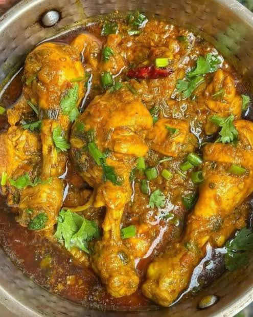

Chicken Masala

Prep time: 15 mins Cook time: 30 mins Serves: 3-4
Ingredients
- 500g chicken, curry cut
- 2 onions, finely chopped
- 2 tomatoes, pureed
- 1 tbsp ginger-garlic paste
- 2 green chilies, slit
- 1 tsp turmeric powder
- 1 tsp (or more) red chili powder
- 1 tsp coriander powder
- 1/2 tsp garam masala
- 3 tbsp oil
- Salt to taste
- Fresh coriander leaves, chopped
Steps
- Marinate the chicken with salt and turmeric for 15 minutes.
- Chop onions and tomatoes.
- Make ginger-garlic paste.
- Heat oil in the pan and add chopped onions and tomatoes till onions are golden brown.
- Add ginger-garlic paste and green chilies, cook for a minute.
- Add all the dry spices, cook until oil starts separating.
- Now, add the chicken pieces, mix well, and cook covered for about 10 minutes.
- Add a little water and simmer until the chicken is fully cooked, around 15-20 minutes.
- Spread some coriander leaves and serve hot with rice or roti.
Backstory: I learned this recipe from my mother. It's a family favorite. (Original recipe by Chef Mummy.)